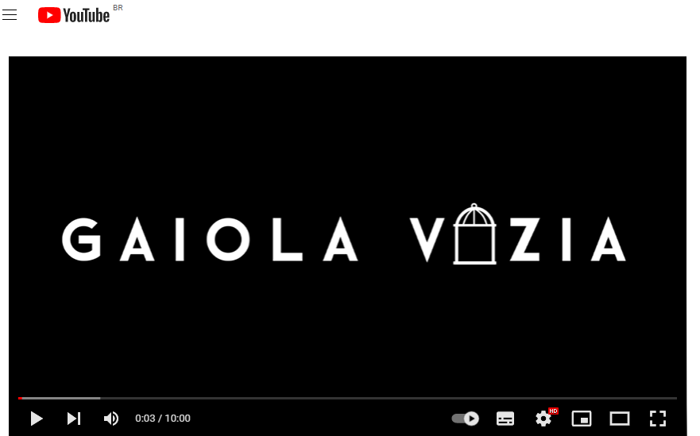

Filme - O Mínimo para Viver
Uma jovem (Lily Collins) está lidando com um problema que afeta muitos jovens no mundo: a anorexia. Sem perspectivas de se livrar da doença e ter uma vida feliz e saudável, a moça passa os dias sem esperança. Porém, quando ela encontra um médico (Keanu Reeves) não convencional que a desafia a enfrentar sua condição e abraçar a vida, tudo pode mudar.
Documentário - Gaiola Vazia
Esse documentário aborda a temática dos transtornos alimentares, mostrando como esse problema atinge as pessoas e como ele se faz presente na atualidade.
 Acesse o documentárioLivro - Anorexia e Bulimia: Conversando com as famílias
o livro Anorexia e Bulimia: conversando com as famílias apresenta os sentidos produzidos e negociados em um grupo de apoio de familiares de pessoas diagnosticadas com Anorexia e Bulimia. As famílias, ao conversarem entre si, trocam impressões sobre como é conviver com o transtorno alimentar, quais as maneiras de encontrar a melhora e qual o papel do familiar nessa situação.
.jpeg) Acesse o PDF
Acesse o PDF